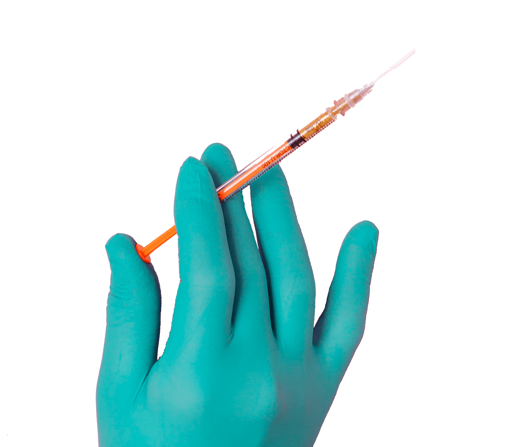

0%
First of all, Thank you for being part of the corona monument.
The goal of this piece is to make a database of covid related experiences and compile them all in a participatory documentary.
The interactive film is made up of the videos the viewers send to us and everyone is welcome to participate in the film by sharing their story.
We believe that every opinion needs to be heard and we are looking forward to hear what you have to share with us.
To participate in the documentary, film your covid related experience or opinion
by using the camera provided on this web page.
Press the record button and talk directly to the camera, preferably in English.
Once you are finished with your recording, press stop recording and take a deep breath, you did great!
If you are satisfied with the video, press the share button and send it to our server.
The length of the video should be no longer than 2 minutes and it can have the tone that best suits your personality.
You may express any opinions or events that best describe your time during the pandemic.
A good place to start is describing your time during the restrictions, and the losses or gains it has brought to you.
If you are a covid survivor, you can tell us about your time in isolation as we would gladly want to hear your first hand experience

All the videos we receive are confidential and will not be sold or used publicly
other than in the Corona Monument documentary.
Please share the Corona Moument with your friends
and let them know about your participation in this interactive documentary.